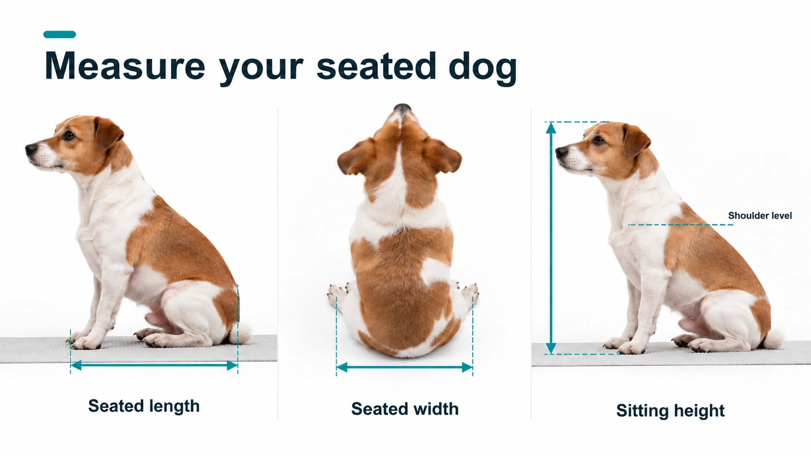
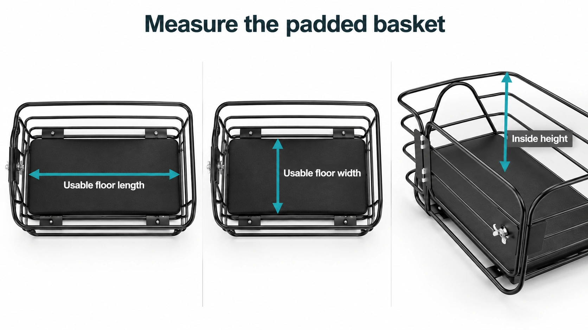
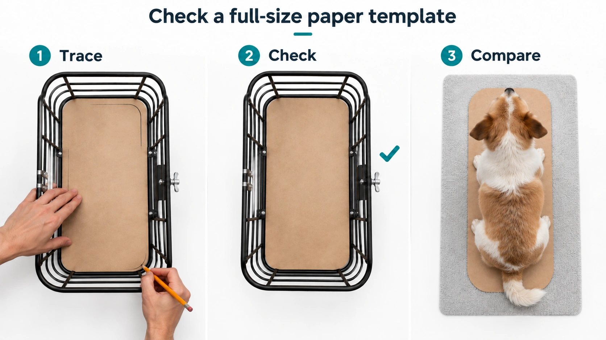

| 文章 | How to Measure Your Dog for a Scooter Basket: Sizing Guide |
|---|---|
| 主题 | 教用户测量狗狗坐姿占地长宽、坐高，以及安装衬垫后的篮筐可用空间，再选择合适的 Gyroor scooter basket 和车型。 |
| 主关键词 | how to measure your dog for a scooter basket |
| 页面归属 | Gyroor · Learn With Gyroor 博客 |
| Shopify 状态 | 隐藏审核稿，尚未公开发布 |
| Shopify 审核入口 | 打开 Shopify 隐藏稿 |
本页用于客户选择新增测量图方案。封面 A 和型号表 3 图已通过并回填隐藏稿；本页新增测量图尚未写入 Shopify。
请从下方选择新增测量图方案，或在备注中写明需要调整的图片编号。
| 选择 | 方案 | 适用情况 |
|---|---|---|
| □ | 方案一：直接使用参考图 | 直接沿用已收集的原厂图；第三方图仅作拍摄构图参考。 |
| □ | 方案二：AI 写实示意图 | 需要快速补齐测量动作示意；图中不写未核验的产品尺寸。 |
| □ | 方案三：按参考图自行拍摄 | 需要与实际车型、衬垫和测量读数完全一致的自有素材。 |
客户最终选择：待填写 备注：待填写
封面A和型号表3图已通过并回填Shopify隐藏稿。本页只审核新增测量图。
| 方案 | 素材 | 当前状态 |
|---|---|---|
| 1. 直接用参考图 | 已收集的参考原图及来源 | 按对应步骤选用参考原图，保留来源 |
| 2. AI写实生成 | 与官网白底照片协调的AI写实图 | 量狗候选待审；量篮与纸样候选继续校对产品细节 |
| 3. 按参考图自行拍摄 | 同车型、同衬垫、同一只狗的自有实拍 | 9镜头清单已完成，待拍摄 |

量狗章节：自然坐姿、地面占地端点与头顶高度。1672×941，WebP 146 KB。参考：R02、R03。

量篮章节：垫后底面长宽、垫面至篮沿高度。1672×941，WebP 157 KB。参考：R06、R09。

纸样章节：描底、放回核对、地面对照。1672×941，WebP 193 KB。参考：R04、R05、R06、R09。
方法沿用已审批正文：自然坐姿占地长宽、地面至头顶；装好衬垫后量可用底面，内高从垫面至篮沿；按实际底面轮廓制作原大纸样。
R09的19.14 × 9.45英寸是C1 Plus底垫标注尺寸。篮筐可用内尺寸以实际配置测量为准。本组候选图只标端点，不填数值。
量狗3镜头、量篮3镜头、纸样3镜头，共9镜头。保留同一车型/衬垫配置、原片和读数。
查看完整拍摄清单